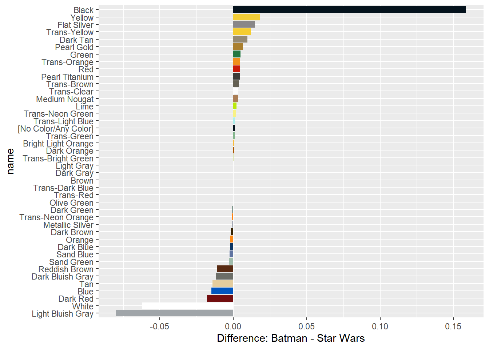

Chapter 5 CH5: Joining Data
Summary
| Mutating joins | Filtering joins | |
|---|---|---|
| descriptions | combine the variables from two tables. | keeps or removes observations from the first table, but it doesn’t add new variables. |
| verbs |
Keeps only observations which match exactly between two tables.
Keep all observations from the first table in your joins.
Keep all observations from the second table in your joins.
Keep all observations from both tables.
|
Filter the first table for observations which also exist in the second table.
Filter the first table for observations that do not exist in the second table.
|


Load datasets from Rebrickable. And library package.
library(tidyverse)
sets <- read_csv("data/lego/sets.csv")
themes <- read_csv("data/lego/themes.csv")
parts <- read_csv("data/lego/parts.csv")
part_categories <- read_csv("data/lego/part_categories.csv")
inventories <- read_csv("data/lego/inventories.csv")
inventory_parts <- read_csv("data/lego/inventory_parts.csv")
colors <- read_csv("data/lego/colors.csv")5.1 1.Inner join

An inner join keeps an observation only if it has an exact match between the first and the second tables.
by argument tells inner join how to match the tables. If there are same variables name in each table, suffix argument can change variable name by adding characters you assign.
Syntax:
table1 %>%
inner_join(table2, by = c(table2_key = table1_key), suffix = c("_chr1", "_chr2"))
# For example
sets %>%
inner_join(themes, by = c("theme_id" = "id"), suffix = c("_set", "_theme"))5.1.1 1-1.Join by keys
# Add the correct verb, table, and joining column
parts %>%
inner_join(part_categories, by = c("part_cat_id" = "id"))# Use the suffix argument to replace .x and .y suffixes
parts %>%
inner_join(part_categories, by = c("part_cat_id" = "id"),
suffix = c("_part", "_category"))5.1.2 1-2.Join with a one-to-many relationship
This is an example of a one-to-many relationship. And by the same variable. Notice that the table increased in the number of rows after the join.
# Combine the parts and inventory_parts tables
parts %>%
inner_join(inventory_parts, by = "part_num")5.1.3 1-3.Join in either direction
An inner_join works the same way with either table in either position. The table that is specified first is arbitrary, since you will end up with the same information in the resulting table either way.(table先後順序不同所得結果一樣)
# Combine the parts and inventory_parts tables
inventory_parts %>%
inner_join(parts, by = "part_num")This is the same join as the last exercise, but the order of the tables is reversed. For an inner_join, either direction will yield a table that contains the same information! Note that the columns will appear in a different order depending on which table comes first.
5.1.4 1-4.Join three or more tables

sets %>%
# Add inventories using an inner join
inner_join(inventories, by = "set_num") %>%
# Add inventory_parts using an inner join
inner_join(inventory_parts, by = c("id" = "inventory_id"))# Count the number of colors and sort
sets %>%
inner_join(inventories, by = "set_num") %>%
inner_join(inventory_parts, by = c("id" = "inventory_id")) %>%
inner_join(colors, by = c("color_id" = "id"),
suffix = c("_set", "_color")) %>%
count(name_color) %>%
arrange(desc(n))5.2 2.Left & Right Joins
5.2.1 2-1.Left join

Left joining two sets by part and color
Each of these observations isn’t just a part, but a combination of a part and a color. Notice, you can specify this with by = c("var1", "var2"). That specifies we want to join on both columns.
# Prepare tables
inventory_parts_joined <- inventories %>%
inner_join(inventory_parts, by = c("id" = "inventory_id")) %>%
select(-id, -version) %>%
arrange(desc(quantity))
millennium_falcon <- inventory_parts_joined %>%
filter(set_num == "7965-1")
star_destroyer <- inventory_parts_joined %>%
filter(set_num == "75190-1")
# Combine the star_destroyer and millennium_falcon tables
millennium_falcon %>%
left_join(star_destroyer, by = c("part_num", "color_id"),
suffix = c("_falcon", "_star_destroyer"))## Warning in left_join(., star_destroyer, by = c("part_num", "color_id"), : Detected an unexpected many-to-many relationship between `x` and `y`.
## ℹ Row 4 of `x` matches multiple rows in `y`.
## ℹ Row 3 of `y` matches multiple rows in `x`.
## ℹ If a many-to-many relationship is expected, set `relationship =
## "many-to-many"` to silence this warning.Left joining two sets by color
# Aggregate Millennium Falcon for the total quantity in each part
millennium_falcon_colors <- millennium_falcon %>%
group_by(color_id) %>%
summarize(total_quantity = sum(quantity))
# Aggregate Star Destroyer for the total quantity in each part
star_destroyer_colors <- star_destroyer %>%
group_by(color_id) %>%
summarize(total_quantity = sum(quantity))
# Left join the Millennium Falcon colors to the Star Destroyer colors
millennium_falcon_colors %>%
left_join(star_destroyer_colors, by = "color_id",
suffix = c("_falcon", "_star_destroyer"))Finding an observation that doesn’t have a match
For example, the inventories table has a version column, for when a LEGO kit gets some kind of change or upgrade. It would be fair to assume that all sets (which joins well with inventories) would have at least a version 1.
And use the replace_na, which takes a list of column names and the values with which NAs should be replaced, to clean up our table.
replace_na(list(colname = replace_value))inventory_version_1 <- inventories %>%
filter(version == 1)
colnames(inventory_version_1)## [1] "id" "version" "set_num"colnames(sets)## [1] "set_num" "name" "year" "theme_id" "num_parts" "img_url"# Join versions to sets
sets %>%
left_join(inventory_version_1, by = "set_num") %>%
# Filter for where version is na
filter(is.na(version)) %>%
# Use replace_na to replace missing values in the version column
replace_na(list(version = 0))5.2.2 2-2.Right join

In this exercise, we’ll count the part_cat_id from parts, before using a right_join to join with part_categories. The reason we do this is because we don’t only want to know the count of part_cat_id in parts, but we also want to know if there are any part_cat_ids not present in parts.
parts %>%
# Count the part_cat_id
count(part_cat_id) %>%
# Right join part_categories
right_join(part_categories, by = c("part_cat_id" = "id")) %>%
# Filter for NA
filter(is.na(n))Joining tables to themselves
In the themes table, you’ll notice there is both an id column and a parent_id column. Keeping that in mind, you can join the themes table to itself to determine the parent-child relationships that exist for different themes.
- Joining themes to their children
In this exercise, you’ll try a similar approach of joining themes to their own children, which is similar but reversed.
themes %>%
# Inner join the themes table
inner_join(themes, by = c("id" = "parent_id"), suffix = c("_parent", "_child")) %>%
# Filter for the "Harry Potter" parent name
filter(name_parent == "Harry Potter")- Joining themes to their grandchildren
Some themes actually have grandchildren: their children’s children. Here, we can inner join themes to a filtered version of itself again to establish a connection between our last join’s children and their children.
# Join themes to itself again to find the grandchild relationships
themes %>%
inner_join(themes, by = c("id" = "parent_id"), suffix = c("_parent", "_child")) %>%
inner_join(themes, by = c("id_child" = "parent_id"), suffix = c("_parent", "_grandchild"))- Left joining a table to itself
themes %>%
# Left join the themes table to its own children
left_join(themes, by = c("id" = "parent_id"), suffix = c("_parent", "_child")) %>%
# Filter for themes that have no child themes
filter(is.na(name_child))5.3 3.Full, Semi & Anti Joins
5.3.1 3-1.Full join

# keep all both
batmobile %>%
full_join(batwing, by = c("part_num", "color_id"),
suffix = c("_batmobile", "_batwing"))Differences between Batman and Star Wars
Now, you’ll compare two themes, each of which is made up of many sets. Since each theme is made up of many sets, combining these tables is the first step towards being able to compare different themes.
inventory_parts_joined <- inventories %>%
inner_join(inventory_parts, by = c("id" = "inventory_id")) %>%
arrange(desc(quantity)) %>%
select(-id, -version)# Start with inventory_parts_joined table
inventory_sets_themes <- inventory_parts_joined %>%
# Combine with the sets table
inner_join(sets, by = "set_num") %>%
# Combine with the themes table
inner_join(themes, by = c("theme_id" = "id"), suffix = c("_set", "_theme"))
inventory_sets_themesAggregating each theme
Before doing this comparison, you’ll want to aggregate the data to learn more about the pieces that are a part of each theme, as well as the colors of those pieces.
# filtered for each theme
batman <- inventory_sets_themes %>%
filter(name_theme == "Batman")
star_wars <- inventory_sets_themes %>%
filter(name_theme == "Star Wars")
# Count the part number and color id, weight by quantity
batman_parts <- batman %>%
count(part_num, color_id, wt = quantity); batman_parts
star_wars_parts <- star_wars %>%
count(part_num, color_id, wt = quantity); star_wars_partsFull joining Batman and Star Wars LEGO parts
Now that you’ve got separate tables for the pieces in the batman and star_wars themes, you’ll want to be able to combine them to see any similarities or differences between the two themes.
parts_joined <- batman_parts %>%
# Combine the star_wars_parts table
full_join(star_wars_parts, by = c("part_num", "color_id"),
suffix = c("_batman", "_star_wars")) %>%
# Replace NAs with 0s in the n_batman and n_star_wars columns
replace_na(list(n_batman = 0,
n_star_wars = 0))
parts_joinedComparing Batman and Star Wars LEGO parts
However, we have more information about each of these parts that we can gain by combining this table with some of the information we have in other tables.
parts_joined %>%
# Sort the number of star wars pieces in descending order
arrange(desc(n_star_wars)) %>%
# Join the colors table to the parts_joined table
inner_join(colors, by = c("color_id" = "id")) %>%
# Join the parts table to the previous join
inner_join(parts, by = "part_num", suffix = c("_color", "_part"))5.3.2 3-2.Semi & Anti joins
Something within one set but not another
Determine which parts are in both the batwing and batmobile sets, and which sets are in one, but not the other.
# Two sets
batmobile <- inventory_parts_joined %>%
filter(set_num == "7784-1") %>%
select(-set_num)
batwing <- inventory_parts_joined %>%
filter(set_num == "70916-1") %>%
select(-set_num)
# Filter the batwing set for parts that are also in the batmobile set
batwing %>%
semi_join(batmobile, by = "part_num")
# Filter the batwing set for parts that aren't in the batmobile set
batwing %>%
anti_join(batmobile, by = "part_num")What colors are included in at least one set?
you could also use a filtering join like semi_join to find out which colors ever appear in any inventory part.
# Use inventory_parts to find colors included in at least one set
colors %>%
semi_join(inventory_parts, by = c("id" = "color_id"))Which set is missing version 1?
Let’s start by looking at the first version of each set to see if there are any sets that don’t include a first version.
# Use filter() to extract version 1
version_1_inventories <- inventories %>%
filter(version == 1); version_1_inventories
# Use anti_join() to find which set is missing a version 1
sets %>%
anti_join(version_1_inventories, by = "set_num")This is likely a data quality issue, and anti_join is a great tool for finding problems like that.
5.3.3 3-3.Visualizing set differences
Aggregating sets to look at their differences
To compare two individual sets, and the kinds of LEGO pieces that comprise them, we’ll need to aggregate the data into separate themes.
In addition to being able to view the sets for Batman and Star Wars separately, adding the column also allowed us to be able to look at the fraction differences between the sets, rather than only being able to compare the numbers of pieces.
inventory_parts_themes <- inventories %>%
inner_join(inventory_parts, by = c("id" = "inventory_id")) %>%
arrange(desc(quantity)) %>%
select(-id, -version) %>%
inner_join(sets, by = "set_num") %>%
inner_join(themes, by = c("theme_id" = "id"), suffix = c("_set", "_theme"))
batman_colors <- inventory_parts_themes %>%
# Filter the inventory_parts_themes table for the Batman theme
filter(name_theme == "Batman") %>%
group_by(color_id) %>%
summarize(total = sum(quantity)) %>%
# Add a fraction column of the total divided by the sum of the total
mutate(fraction = total / sum(total))
# Filter and aggregate the Star Wars set data; add a fraction column
star_wars_colors <- inventory_parts_themes %>%
filter(name_theme == "Star Wars") %>%
group_by(color_id) %>%
summarize(total = sum(quantity)) %>%
mutate(fraction = total / sum(total))Combining sets
Prior to visualizing the data, you’ll want to combine these tables to be able to directly compare the themes’ colors.
batman_colors %>%
# Join the Batman and Star Wars colors
full_join(star_wars_colors, by = "color_id", suffix = c("_batman", "_star_wars")) %>%
# Replace NAs in the total_batman and total_star_wars columns
replace_na(list(total_batman = 0, total_star_wars = 0)) %>%
inner_join(colors, by = c("color_id" = "id")) %>%
# Create the difference and total columns
mutate(difference = fraction_batman - fraction_star_wars,
total = total_batman + total_star_wars) %>%
# Filter for totals greater than 200
filter(total >= 200)Visualizing the difference: Batman and Star Wars
Now you’ll create a bar plot with one bar for each color (name), showing the difference in fractions.
library(forcats)
colors_joined <- batman_colors %>%
full_join(star_wars_colors, by = "color_id", suffix = c("_batman", "_star_wars")) %>%
replace_na(list(total_batman = 0, total_star_wars = 0)) %>%
inner_join(colors, by = c("color_id" = "id")) %>%
mutate(difference = fraction_batman - fraction_star_wars,
total = total_batman + total_star_wars) %>%
filter(total >= 200) %>%
replace_na(list(difference = 0)) %>%
mutate(name = fct_reorder(name, difference))
# we need to add # to create our palette
colors_joined$rgb <- paste("#", colors_joined$rgb, sep="")
color_palette <- setNames(colors_joined$rgb, colors_joined$name)
# Create a bar plot using colors_joined and the name and difference columns
ggplot(colors_joined, aes(x = name, y = difference, fill = name)) +
geom_col() +
coord_flip() +
scale_fill_manual(values = color_palette, guide = "none") +
labs(y = "Difference: Batman - Star Wars")
5.4 4.Case study: Joins on Stack Overflow Data
5.4.1 4-1.Load dataset
Three of the Stack Overflow survey datasets are questions, question_tags, and tags:
questions: an ID and the score, or how many times the question has been upvoted; the data only includes R-based questions.question_tags: a tag ID for each question and the question’s id.tags: a tag id and the tag’s name, which can be used to identify the subject of each question, such as ggplot2 or dplyr.
questions <- read_csv("data/stackoverflow/questions.csv")
question_tags <- read_csv("data/stackoverflow/question_tags.csv")
tags <- read_csv("data/stackoverflow/tags.csv")
answers <- read_csv("data/stackoverflow/answers.csv")
colnames(questions)## [1] "id" "creation_date" "score"colnames(question_tags)## [1] "question_id" "tag_id"colnames(tags)## [1] "id" "tag_name"colnames(answers)## [1] "id" "creation_date" "question_id" "score"5.4.3 4-3.Joining questions and answers
5.4.3.1 Finding gaps between questions and answers
Now we’ll join together questions with answers so we can measure the time between questions and answers.
questions %>%
# Inner join questions and answers with proper suffixes
inner_join(answers, by = c("id" = "question_id"),
suffix = c("_question", "_answer")) %>%
# Subtract creation_date_question from creation_date_answer to create gap
mutate(gap = as.integer(as.Date(creation_date_answer, format = "%m/%d/%Y") - as.Date(creation_date_question, format = "%m/%d/%Y")))## Warning in inner_join(., answers, by = c(id = "question_id"), suffix = c("_question", : Detected an unexpected many-to-many relationship between `x` and `y`.
## ℹ Row 2 of `x` matches multiple rows in `y`.
## ℹ Row 118226 of `y` matches multiple rows in `x`.
## ℹ If a many-to-many relationship is expected, set `relationship =
## "many-to-many"` to silence this warning.5.4.3.2 Joining question and answer counts
We can also determine how many questions actually yield answers. If we count the number of answers for each question, we can then join the answers counts with the questions table.
# Count and sort the question id column in the answers table
answer_counts <- answers %>%
count(question_id, sort = TRUE)
# Combine the answer_counts and questions tables
question_answer_counts <- questions %>%
left_join(answer_counts, by = c("id" = "question_id")) %>%
# Replace the NAs in the n column
replace_na(list(n = 0)); question_answer_counts5.4.3.4 Average answers by question
You can use tagged_answers to determine, on average, how many answers each questions gets.
Some of the important variables from this table include: n, the number of answers for each question, and tag_name, the name of each tag associated with each question.
tagged_answers %>%
# Aggregate by tag_name
group_by(tag_name) %>%
# Summarize questions and average_answers
summarize(questions = n(),
average_answers = mean(n)) %>%
# Sort the questions in descending order
arrange(desc(questions))5.4.4 4-4.The bind_rows verb
# 增加row = rbind()
bind_rows()
#增加column = cbind()
bind_cols()bind_rows() / rbind()

bind_cols() / cbind()

5.4.4.3 Visualizing questions and answers in tags
Let’s create a plot to examine the information that the table contains about questions and answers for the dplyr and ggplot2 tags.
# Filter for the dplyr and ggplot2 tag names
by_type_year_tag_filtered <- by_type_year_tag %>%
filter(tag_name %in% c("dplyr", "ggplot2")); by_type_year_tag_filtered
# Create a line plot faceted by the tag name
ggplot(by_type_year_tag_filtered, aes(x = year, y = n, color = type)) +
geom_line() +
facet_wrap(~ tag_name)
Notice answers on dplyr questions are growing faster than dplyr questions themselves; meaning the average dplyr question has more answers than the average ggplot2 question.